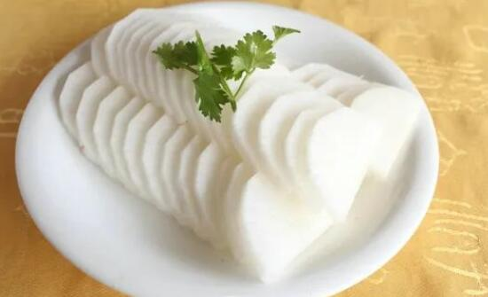

萝卜的功效与作用 萝卜不能和什么一起吃
大家知道很多的食物，都是我们生活中常见的特有食物吗?下面小编为大家介绍的则是生活中很常见的萝卜，萝卜又叫菜菔，萝白。是在我国各地都有大量栽植的。萝卜性凉，味辛、甘，入脾、胃经，具有消积滞、清热化痰、下气宽中、解毒等功效，主治食积胀满、痰嗽失音、呕吐反酸、吐血、偏头痛等。下面就随小编一起来看看萝卜的功效与作用，萝卜不能和什么一起吃!

萝卜的功效与作用
中医认为，萝卜性凉，昧辛甘，无毒，入肺、胃经，能消积滞、化痰热、下气、宽中、解毒，治食积胀满、痰嗽失音、肺痨咯血、呕吐反酸等。萝卜具有很强的行气功能，还能止咳化痰、除燥生津、清热解毒、利便。
萝卜可增强肌体免疫力。萝卜中的B族维生素和钾、镁等矿物质可促进胃肠蠕动，有助于体内废物的排出。常吃萝卜可降低血脂、软化血管、稳定血压，预防冠心病、动脉硬化、胆石症等疾病。
1、增强机体免疫功能：萝卜含丰富的维生素C和微量元素锌，有助于增强机体的免疫功能，提高抗病能力;
2、帮助消化：萝卜中的芥子油能促进胃肠蠕动，增加食欲，帮助消化;
3、帮助营养物质的吸收：萝卜中的淀粉酶能分解食物中的淀粉、脂肪、使之得到充分的吸收;
本站文章均来自互联网，仅供学习参考，如有侵犯您的版权，请邮箱联系我们删除！